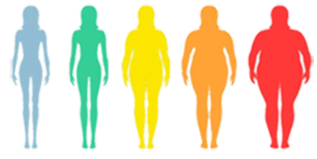

Porcentaje
Hombres y Mujeres
En 2016, más de 1900 millones de adultos de 18 o más años tenían sobrepeso, de los cuales, más de 650 millones eran obesos.
Con un 13%, Estados Unidos es el país con el porcentaje más alto de adultos jóvenes y niños obesos, mientras que Egipto lidera en obesidad adulta con casi un 35%, entre los 195 territorios analizados.

